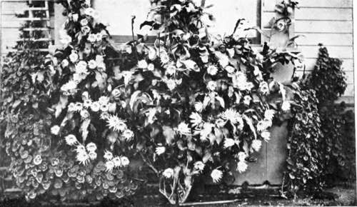

XI. The Insect Enemies Of Plants
Description
This section is from the book "Indoor Gardening", by Eben E. Rexford. Also available from Amazon: Indoor Gardening.
XI. The Insect Enemies Of Plants
PLANTS suffer more, I think, from the attacks of insects than from disease. Few plants are exempt. We seldom find any collection wholly free from them in spite of the many and determined efforts on the part of the owner to put them to rout. Grow Tea Roses and Pelargoniums and you will find it almost impossible to prevent the aphis, or green plant louse from attempting to take possession of them. Grow Coleus, and other plants of similar habit, and the woolly aphis or mealy-bug will be almost sure to take up his quarters on them. In nearly every living-room where the temperature runs high and the air is dry, the red spider delights to do his deadly work. If you can prevent scale from troubling your Palms, and other plants having a firm-textured foliage, you will certainly be justified in congratulating yourself on an experience that falls to few persons who attempt plant-growing in the house.
The fact is, every person who sets out to grow plants must take it for granted, from the beginning, that she will have to wage war with all these enemies. Unless she is willing to do this she ought not to make the attempt. "Forewarned, forearmed" holds good here, provided she studies the subject until she knows the nature of each enemy she has to deal with, and the weapons to make use of against it, before he arrives upon the field of action. Wait until he is there and he has you at a great disadvantage.
The aphis appears to be the chief enemy of plants because he is found in great numbers, is large enough to be easily seen, and can be found almost everywhere. But he, though dangerous when allowed to carry on his work unmolested, really does far less injury to ordinary plants than the red spider. This enemy is so small that he can hardly be seen by the naked eye, and on this account his presence is often unsuspected for some time after he locates himself upon your plants. Indeed, I have been told many times by persons who had written for advice, from whose description of their plants I had diagnosed red spider as the cause of the trouble, that I must surely be mistaken, for they had never seen such an insect on their plants. But on finding out a little more about the pest they had discovered that he was there, engaged in active and deadly work.
Fumigation with tobacco used to be the principal agency employed to fight the aphis. But most women are so sensitive to the disagreeable smell of burning tobacco that they prefer to go without plants rather than be nauseated by it, and having its stale, sickening odor clinging to the rooms and everything in them for days after fumigating. Not so very long ago it was discovered that the active principle of nicotine could be used with far more satisfactory results, when applied in water, in the form of a spray. For a time we steeped our tobacco, and extracted its toxic strength in that way, applying the "tea" thus secured to our aphis-infested plants by showering, or dipping. But this was a far from pleasant process, as the odor given off in making the infusion was almost as disagreeable as tobacco smoke. Because of this many persons neglected to make use of it, and contented themselves with brushing off the aphides with a whisk-broom, and burning those secured in this way. This was satisfactory, as far as it went, but the trouble was that it did not go far enough. No matter how thorough one might be in the removal of the insects, some would escape, and, as they breed with wonderful rapidity, the plants would in a short time be again covered with them.
Then the chemists took up the matter and succeeded in extracting the nicotine principle of the tobacco leaf so perfectly that a small quantity of it, added to water and sprayed over the infested plants, produced results far more satisfactory than any that had been achieved before. This extract was put on the market under the name of Nicotocide, and has come into general use, wherever plants are grown. All one has to do, in making use of it, is to dilute it with water according to the directions on the can or bottle in which it is sent out, and spray it over the plants, or, in case they are badly infested, to dip them in it. It is sure death to every aphis it comes in contact with if used as directed.
Dipping has one advantage over spraying -that of being more thorough, as no insect can escape when the entire plant is submerged. I would advise giving badly-infested plants a bath of this kind, at the beginning of the fight. After once freeing them from the enemy they can be kept free by using the extract occasionally thereafter, more as a preventive than a cure. The smell given off by it, in spraying, is not strong enough to be very unpleasant, and it is speedily dissipated by admitting fresh air to the room. We therefore need fear the aphis no longer. True, it is some trouble to prepare the infusion, and some expense is connected with it, but these items are so slight, as compared with the benefits resulting, that no lover of flowers has any excuse for allowing her plants to be injured by this universal pest.
Cactus (Phyllocactus).
I am often asked: Where does the aphis come from ? I do not know. I have seen collections of plants that were apparently free from it to-day, and to-morrow hundreds could be found on them, and these would seem, in three days' time, to have been multiplied by thousands. And yet no new possibly infected plant had been added to the collection. Where they had come from, or how they came no one could say. All that could be said was-that they were there, and had come to stay, unless prompt and energetic means were taken to dislodge and rout them. The time to begin the fight against this insect is when the first one is discovered. Lose no time in procuring the weapon I have spoken of, make effective use of it, and when you have succeeded in getting control of the enemy keep it.
Continue to: